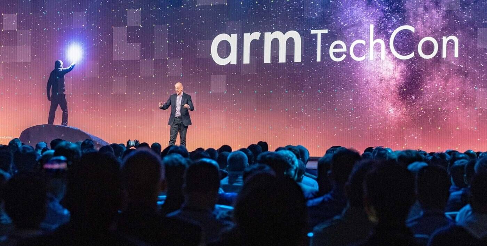

History
The Origins and Evolution of TechCon
TechCon started in 2004 as the Arm Developers’ Conference, focusing on ARM processors. By 2009, it evolved into Arm TechCon, expanding into IoT, AI, and cloud computing.
In the 2010s, it became a major industry event, influencing smartphones, 4G infrastructure, and embedded systems. The Cortex-A8 launch in 2005 was a milestone.

Mission
TechCon: Goals & Principles🚀
TechCon is a global technology conference that connects innovators, decision-makers, and disruptors to explore advancements in AI, blockchain, fintech, and digital transformation.
🌍 Core Goals:
Expand Networks – Connect with top tech leaders and entrepreneurs.
Gain Practical Knowledge – Learn through hands-on workshops and case studies.
Drive Innovation – Showcase groundbreaking ideas and emerging technologies.
💡 Driving Principles:
Collaboration – Fostering partnerships between industry experts.
Accessibility – Making tech insights available to a global audience.
Sustainability – Encouraging ethical and responsible tech development.